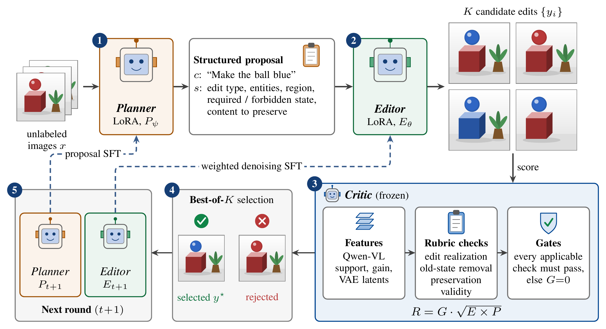
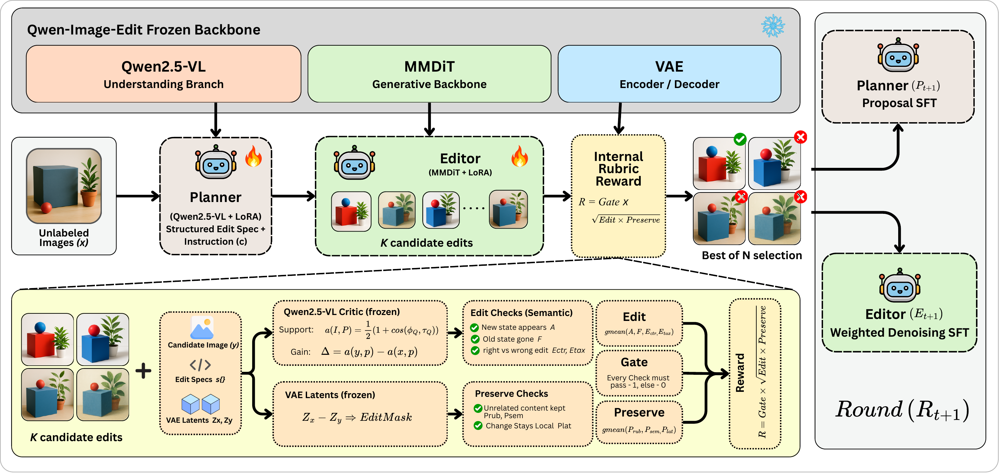
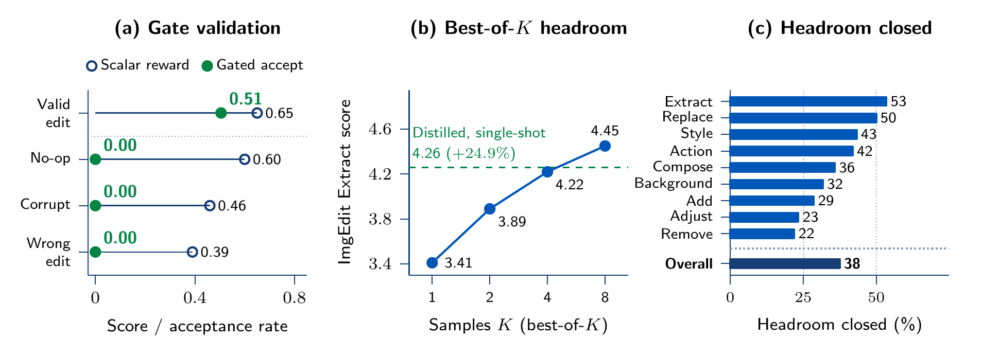
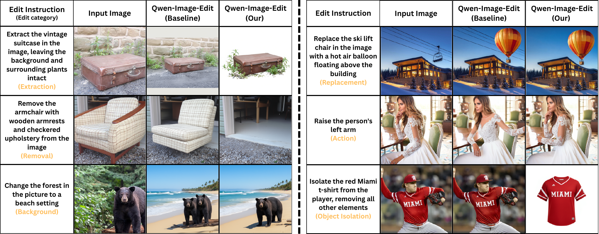
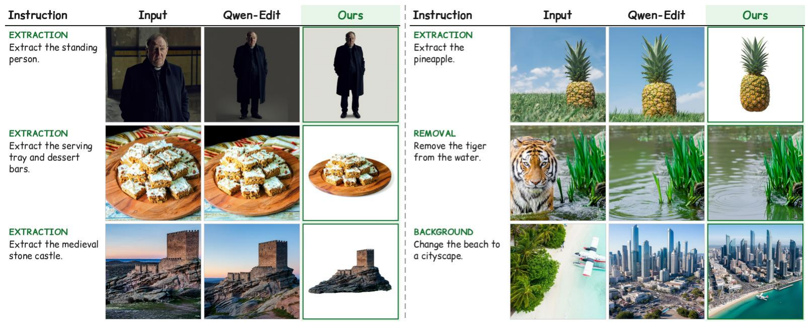
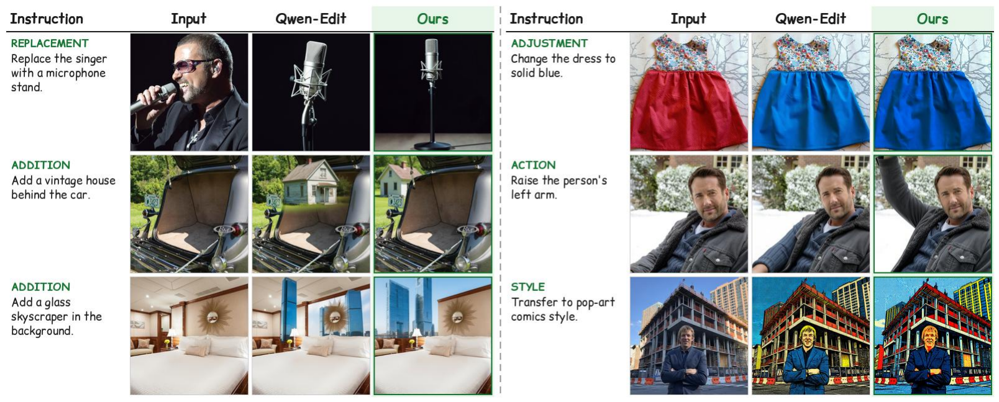

No human-edited targets
Training uses unlabeled source images. Every target is one of the editor's own samples that passed verification.
Self-Evolving Image Editing via Reward-Verified Self-Distillation

Overview
Improving instruction-guided editors usually needs human-edited training pairs or an external reward model, and a single scalar score can reward plausible failures such as an unchanged image or a lost background. Rubric-CEPR checks each candidate edit with the editor's own features, rejects any candidate that fails a check, and distills only the verified ones into a lightweight adapter.
Training uses unlabeled source images. Every target is one of the editor's own samples that passed verification.
The Critic reuses features already exposed by the editor. External judges are used only to evaluate on benchmarks.
The adapted editor is evaluated with one generation per instruction: ImgEdit 4.36 → 4.60 on Qwen-Image-Edit, and a gain on Step1X-Edit too.
Why it is hard
Self-training an editor is risky because an output that passes a lenient score becomes supervision for the next model.
On a fixed 210-pair probe, a scalar reward still assigns 0.39–0.60 to no-op, corrupted and wrong-edit candidates. Our fix: separate checks for edit realization, removal of the old state and preservation, combined with non-compensatory gates.
Training on the editor's own candidates without gates improves ImgEdit by only +2.0%, versus +5.5% for Rubric-CEPR, because rejected candidates outnumber usable targets. Our fix: distill only gate-passing, best-scoring candidates.
Framework
A frozen Qwen-Image-Edit backbone provides understanding features and VAE latents. Lightweight Planner and Editor adapters are updated; the Critic stays fixed.

Emits an edit instruction and a structured specification: edit type, entities, target region, required and forbidden after-states, and content to preserve.
Samples K candidate edits for each proposal and is the model that is finally improved, through a LoRA adapter trained on verified targets.
A fixed internal Critic scores each candidate with the Contrastive Edit-Preservation Reward and rubric checks. Any failed gate makes a candidate ineligible.
Key ideas
CEPR contrasts support for the requested edit with incorrect alternative instructions, and rewards preservation of unrelated content. The rubric adds explicit checks for required states, removal of forbidden old states, and preservation constraints.
The reward is R = G · √(Edit × Preserve). A candidate that fails any applicable check gets zero reward, so a high score on one term cannot hide a failed edit or lost content.
Best-of-K sampling already finds better edits than the base editor produces in one shot. Distilling the best gate-passing candidate into an adapter turns that headroom into a single-shot checkpoint.
Results
Every adapted editor is compared with its own base under the same protocol, with one generation per instruction. The ImgEdit overall score is the mean over three training seeds (4.58, 4.60, 4.62; 4.60 ± 0.02 SD).
| Model | Add | Remove | Replace | Adjust | Action | Style | Bg. | Extract | Compose | Overall |
|---|---|---|---|---|---|---|---|---|---|---|
| Published image editors (their own judges) | ||||||||||
| GPT-4o-Image | 4.65 | 3.81 | 4.49 | 4.26 | 4.76 | 4.75 | 4.62 | 2.96 | 4.54 | 4.32 |
| Step1X-Edit | 3.90 | 2.61 | 3.45 | 3.13 | 3.43 | 4.44 | 3.19 | 1.87 | 2.52 | 3.17 |
| ImgEdit-E1 | 3.82 | 2.40 | 2.80 | 4.04 | 3.21 | 4.38 | 3.38 | 2.55 | 2.87 | 3.27 |
| UltraEdit | 3.63 | 1.71 | 3.13 | 3.01 | 3.57 | 3.69 | 3.31 | 2.02 | 2.33 | 2.93 |
| InstructPix2Pix | 2.29 | 1.49 | 1.93 | 1.79 | 1.51 | 3.54 | 1.67 | 1.33 | 1.48 | 1.89 |
| Post-training with an external reward (as reported) | ||||||||||
| Qwen-Image-Edit-2509 (UniWorld paper) | – | – | – | – | – | – | – | – | – | 4.35 |
| UniWorld-Qwen-Edit | – | – | – | – | – | – | – | – | – | 4.48 |
| UniWorld-V2 | – | – | – | – | – | – | – | – | – | 4.49 |
| Self-distillation with internal rewards | ||||||||||
| Qwen-Image-Edit-2509 | 4.51 | 4.36 | 4.72 | 4.40 | 4.69 | 4.70 | 4.40 | 3.41 | 4.05 | 4.36 |
| Rubric-CEPR (Ours) | 4.65+3.1% | 4.50+3.2% | 4.86+3.0% | 4.54+3.2% | 4.82+2.8% | 4.83+2.8% | 4.59+4.3% | 4.26+24.9% | 4.39+8.4% | 4.60+5.5% |
| Model | GEdit SC | GEdit PQ | GEdit O | CE IF | CE ID | CE PQ | CE O |
|---|---|---|---|---|---|---|---|
| Qwen-Image-Edit-2509 (base → ours) | |||||||
| Qwen-Image-Edit-2509 | 8.11 | 7.10 | 7.39 | 9.69 | 9.02 | 7.60 | 8.77 |
| Rubric-CEPR (Ours) | 9.05+11.6% | 7.92+11.5% | 8.31+12.4% | 9.75+0.7% | 9.18+1.8% | 7.97+4.9% | 8.97+2.3% |
| Step1X-Edit (base → ours) | |||||||
| Step1X-Edit | 7.07 | 7.58 | 6.69 | – | – | – | – |
| Rubric-CEPR (Ours) | 7.84+10.9% | 8.05+6.2% | 7.24+8.2% | – | – | – | – |
Mechanism evidence

Qualitative results
The baseline often returns a realistic image that leaves the requested change undone. The adapted editor completes the edit and keeps the content the instruction leaves unchanged.



Citation
Copy the BibTeX entry below. Update it with the arXiv identifier once available.
@misc{thawkar2026rubriccepr,
title={Rubric-CEPR: Self-Evolving Image Editing via Reward-Verified Self-Distillation},
author={Thawkar, Ritesh and Patle, Shubham and Venkatraman, Shravan and Anwer, Rao Muhammad},
year={2026},
note={Preprint}
}